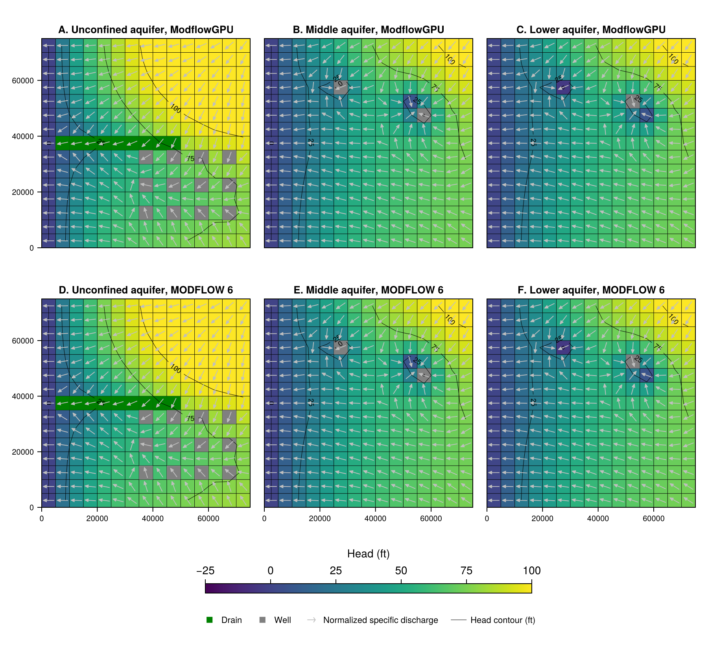
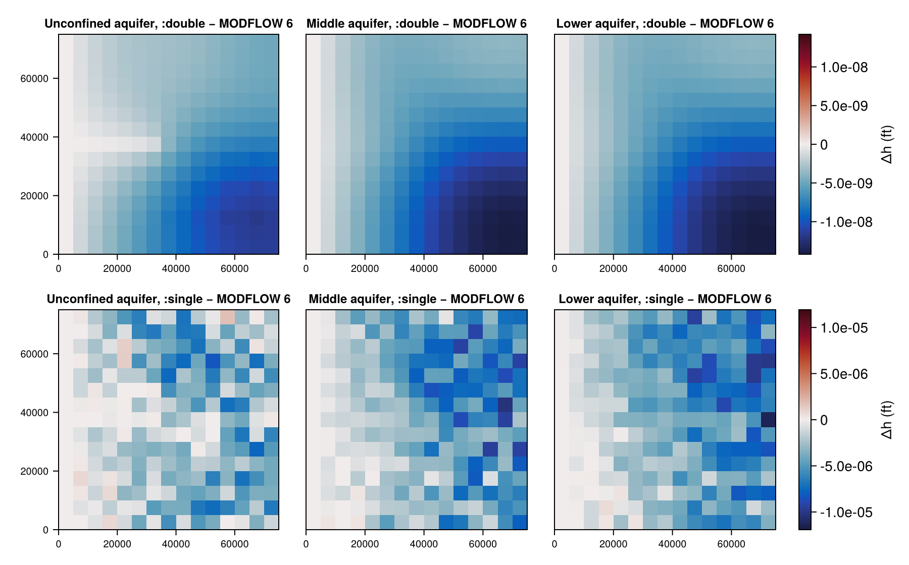

TWRI: a layered aquifer system with wells, drains and recharge
The test problem of the MODFLOW-88 and MODFLOW-2005 documentation (McDonald and Harbaugh, 1988, from the Techniques of Water-Resources Investigations): three aquifers separated by two confining units, here modelled as five layers of 15 × 15 cells of 5000 ft. The upper aquifer is convertible (unconfined); steady recharge falls on it, a drain runs along its middle row, and fifteen wells pump from the three aquifers. Constant heads of 0 ft on the west edge of the upper and middle aquifers drain the system. Units are feet and seconds.
This is the MODFLOW 6 example ex-gwf-twri01. Its figure compares MODFLOW 6 with a MODFLOW-2005 model that represents the confining units by vertical leakance (quasi-3D); here the bottom row shows MODFLOW 6 6.8.2 on the same five-layer input instead, and the top row ModflowGPU.
Input and the MODFLOW 6 run
ExampleTools (docs/ExampleTools.jl in the repository) takes the input from the released mf6examples.zip, sets the tight closures of the parity tests in the IMS file, and runs MODFLOW 6.8.2.
using ModflowGPU, CairoMakie
mf6 = example_run("ex-gwf-twri01")
mf6.mode, mf6.mf6_time("tight", 0.049187778)The ModflowGPU run
In :double and in :single precision on the CPU, with the default options.
runs = Dict(p => run_modflowgpu(mf6.dir, p) for p in (:double, :single))
r = runs[:double].result
r.convergedtrueHeads in the three aquifers
The heads in layers 1, 3 and 5 (the upper, middle and lower aquifers) with contours at −25, 0, 25, 75 and 100 ft, the normalized specific discharge (computed from the FLOW-JA-FACE record as MODFLOW 6 does), the drain cells (green) and the wells of each layer (grey), as in the MF6 example.
g = read_dis_grid(mf6.dir)
mf6_hds = only(filter(endswith(".hds"), readdir(mf6.dir; join = true)))
mf6_cbc = only(filter(endswith(".cbc"), readdir(mf6.dir; join = true)))
drains = budget_cells(g, r.budget_file, "DRN")
wells = budget_cells(g, r.budget_file, "WEL")
function heads_and_flow(hds, cbc)
h = read_head(open_head_file(hds), 1)
flowja = vec(only(read_budget(open_budget_file(cbc); text = "FLOW-JA-FACE")))
qx, qy = specific_discharge(g, flowja, h)
return h, qx, qy
end
fig = Figure(; size = (900, 820))
titles = ["Unconfined aquifer", "Middle aquifer", "Lower aquifer"]
heatmaps = []
GRAY50, GRAY75 = RGBf(0.5, 0.5, 0.5), RGBf(0.75, 0.75, 0.75) # matplotlib's "0.5" and "0.75"
for (row, (label, hds, cbc)) in enumerate((("ModflowGPU", r.head_file, r.budget_file), ("MODFLOW 6", mf6_hds, mf6_cbc)))
h, qx, qy = heads_and_flow(hds, cbc)
for (col, l) in enumerate((1, 3, 5))
local ax = Axis(
fig[row, col]; aspect = DataAspect(), title = "$(('A':'F')[3(row - 1) + col]). $(titles[col]), $label",
titlesize = 13, xtickformat = intformat, ytickformat = intformat, xticklabelsize = 10, yticklabelsize = 10,
xticks = 0:20_000:60_000, yticks = 0:20_000:60_000,
)
push!(heatmaps, map_heatmap!(ax, g, layer_values(h, l); colorrange = (-25, 100)))
map_grid!(ax, g; linewidth = 0.5)
map_cells!(ax, g, filter(c -> c[1] == l, drains); color = :green)
map_cells!(ax, g, filter(c -> c[1] == l, wells); color = GRAY50)
map_contour!(ax, g, layer_values(h, l); levels = [-25, 0, 25, 75, 100], color = :black, linewidth = 0.5, labels = true, labelsize = 9)
map_vectors!(ax, g, qx[:, :, l], qy[:, :, l]; color = GRAY75)
limits!(ax, 0, 75_000, 0, 75_000)
col > 1 && hideydecorations!(ax; grid = false)
row == 1 && hidexdecorations!(ax; grid = false)
end
end
Colorbar(fig[3, 1:3], last(heatmaps); vertical = false, label = "Head (ft)", width = Relative(0.5))
Legend(
fig[4, 1:3],
[
MarkerElement(; marker = :rect, color = :green, markersize = 12), MarkerElement(; marker = :rect, color = GRAY50, markersize = 12),
MarkerElement(; marker = '→', color = GRAY75, markersize = 14), LineElement(; color = :black, linewidth = 0.5),
],
["Drain", "Well", "Normalized specific discharge", "Head contour (ft)"]; framevisible = false, labelsize = 11, orientation = :horizontal,
)
save_figure(fig, "ex-gwf-twri01")
Comparison with MODFLOW 6
The head differences between ModflowGPU and MODFLOW 6 in the three aquifers, in both precisions.
h6 = read_head(open_head_file(mf6_hds), 1)
fig = Figure(; size = (900, 560))
for (row, p) in enumerate((:double, :single))
d = read_head(open_head_file(runs[p].result.head_file), 1) .- h6
m = maximum(x -> isnan(x) ? 0.0 : abs(x), mask_inactive(d))
local hm
for (col, l) in enumerate((1, 3, 5))
local ax = Axis(fig[row, col]; aspect = DataAspect(), title = "$(titles[col]), :$p − MODFLOW 6", titlesize = 12, xtickformat = intformat, ytickformat = intformat, xticks = 0:20_000:60_000, yticks = 0:20_000:60_000, xticklabelsize = 10, yticklabelsize = 10)
hm = map_heatmap!(ax, g, layer_values(d, l); colormap = :balance, colorrange = (-m, m))
col > 1 && hideydecorations!(ax; grid = false)
end
Colorbar(fig[row, 4], hm; label = "Δh (ft)", tickformat = expformat)
end
save_figure(fig, "ex-gwf-twri01-difference")
The largest head and budget differences, next to the values of the parity table, and the wall times (CPU: this build, including compilation for the first run of the session; GPU: the parity table, AMD Radeon RX 7800 XT).
stats = Dict(p => (; cmp = compare_with_mf6(mf6.dir, runs[p]), runs[p].time) for p in (:double, :single))
comparison_table("ex-gwf-twri01", stats; unit = "ft")| Preset | max |Δh| (ft), this build | max |Δh| (ft), parity table | Budget, this build | Budget, parity table | CPU time, this build (s) | GPU time, parity table (s) |
|---|---|---|---|---|---|---|
:double | 1.4e-08 | 1.4e-08 | 8.1e-12 | 8.1e-12 | 4.57 | 0.06 |
:single | 1.2e-05 | 1.2e-05 | 3.5e-08 | 3.5e-08 | 4.30 | 0.77 |
Budget: the largest difference of a budget-file flow or a listing-table rate, relative to the total inflow of its time step.